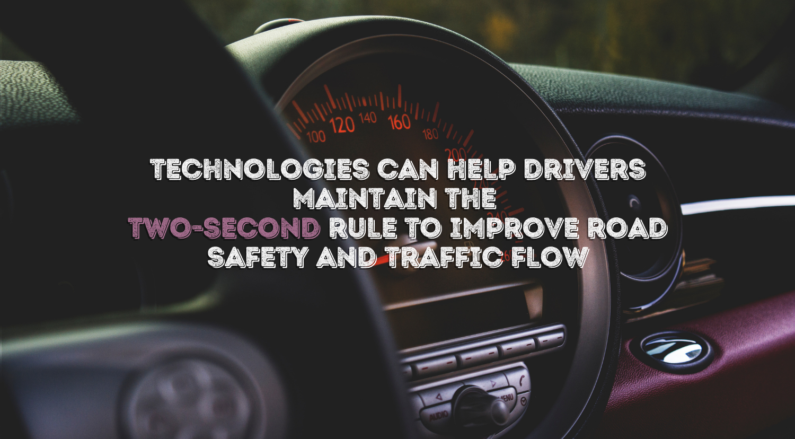

TECHNOLOGIES CAN HELP DRIVERS MAINTAIN THE TWO-SECOND RULE TO IMPROVE ROAD SAFETY AND TRAFFIC FLOW
The two-second rule, taught in driver's ed classes across the country, is a rule of thumb that helps drivers maintain a safe distance from the car ahead at any speed.Adhering to the two-second rule can be difficult. A team of engineers led by Dan Work, associate professor of civil and environmental engineering, has developed anassistive technology to help drivers maintain this guidance to smooth out traffic jams and improve safety. A preprint of the article, "CAN Coach: Vehicular Control through Human Cyber-Physical Systems," was published by arXiv on April 8, and the paper waspresented at the ACM/IEEE International Conference on Cyber-Physical Systems during 2021 CPS-IOT Week May 18–21. Researchers on the project includeMatthew Nice, a current graduate student, and Jonathan Sprinkle, PhD'03, one of the School of Engineering's newest professors of computer science. Work's team introduced a controller area network coach to cars—a system that gives real-time feedback to drivers using radar data containing speed and positionrelative to the car ahead. Their goal was to see if they could use sensors already available within vehicles on the road to successfully help drivers maintain a safedistance—in essence to drive in a way no human can do alone, said Work, who also is a 2021 Chancellor Faculty Fellow. The technology was successful. By comparing six drivers with and without the CAN coach, the engineers determined that drivers with the assistive technology camecloser to and maintained the two-second rule. Drivers using the coach reduced the average time-gap error by 73 percent and improved consistency, reducing thestandard deviation of the time-gap error by 53 percent. "We are now exploring how coached human drivers may ultimately help improve traffic conditions overall." Work's team intends to expand the experiments to cohorts of drivers and is looking into creating systems that deliver personalized feedback that improves performance and minimizes intervention.